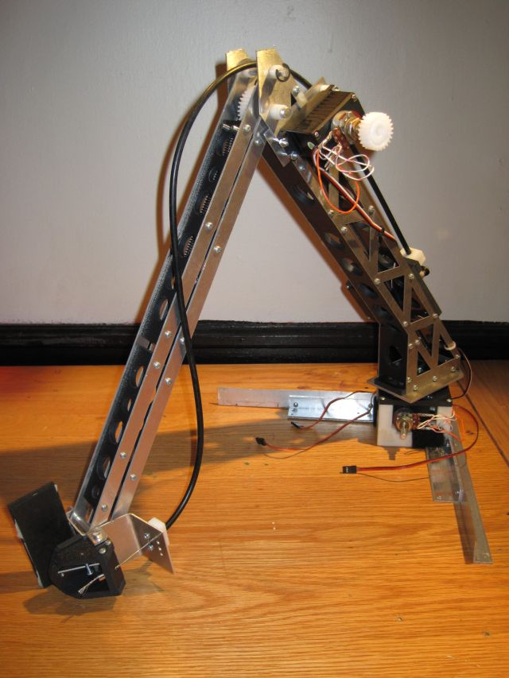
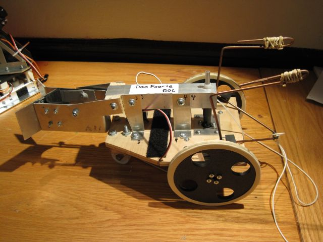

2.007 Robot
2.007 is a class at MIT called Design and Manufacturing I. Over the course of the semester, students individually build robots designed to score points by completing certain tasks on a "table". At the end of the year, the robots compete in a single-elimination bracket competition. This year, the Aztec themed challenge involved lifting "codices" to the top of a pyramid, putting steel balls through a hoop, and pulling over a lever. The lever multiplied your score depending on how far your robot pulled it over, so I focused on that in addition to lifting a codex. More information can be found at the 2.007 website.
Video of the contest and video of individual machines.
My larger robot, Cortes (after the conquistador of the Aztecs), consists of an articulated arm mounted to a stationary base that grips a codex and fluidly lifts it to the top of the pyramid. I also built a smaller robot, Alvarado, to drive across the table, anchor to the wall, latch on to the lever, and winch it over. Here is a screenshot of the CAD model of the arm and base:

The two finished robots worked wonderfully at the contest and I placed 2nd!
 The arm incorporates a turntable, a geared servo which deadlifts a parallel linkage forearm, and a cable actuated gripper. The turntable base was 3D printed and the aluminum side plates were made with a water jet machine. I modified two of the three servos for continuous rotation; the two potentiometers in the photo are for trimming.
The lever bot has only one actuator (the winch) besides the two drive motors for the wheels, so it has several passive mechanisms. The back of the robot has a grappling hook that is knocked off the robot and onto the table wall when the robot backs into the wall. The front has a one-way latch which locks onto the lever when the robot runs onto it. The harder the winch pulls, the more tightly the self-help latch grips onto the lever.